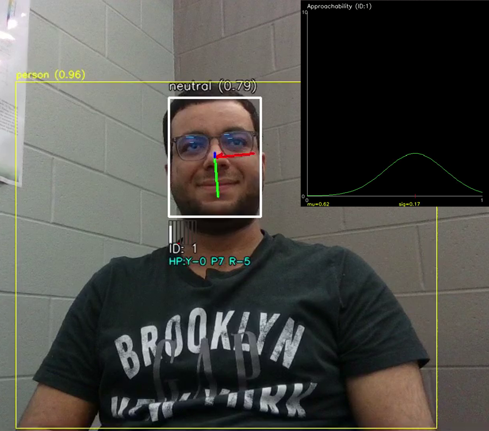

Project Documentation
Access the detailed research paper with equations and methodology for the Interaction Willingness Factor (IWF).
Download PDFEnhancing Social Awareness in Robotic Systems Through Non-Verbal Human Cues
Access the detailed research paper with equations and methodology for the Interaction Willingness Factor (IWF).
Download PDFFig 3. Notice how a neutral emotion with indirect gaze is considered 62% approachable but with high uncertainty.
Fig 2. The nonverbal cue detection pipeline running in parallel with all DL models.

Fig 4. Single head turn causes minor change; multiple turns decrease value significantly.